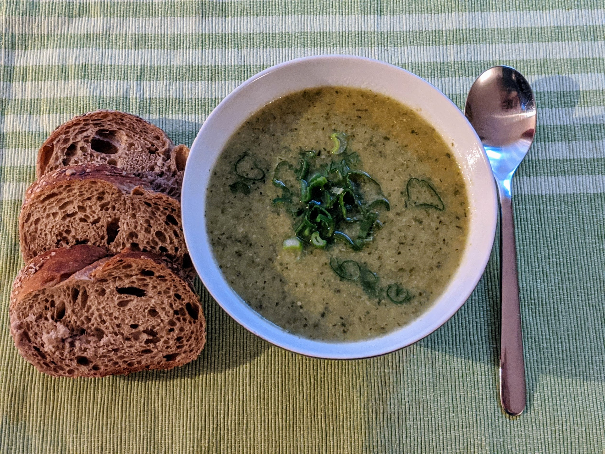

Soupe veloutée de courgettes

Pour deux personnes (en entrée) :
- Une grosse courgette, ou deux petites
- Une grosse patate, ou deux petites
- Une échalote
- Une gousse d'ail
- Un demi-litre de bouillon de poulet ou de légumes
- (Facultatif) 100mL de crème liquide
- (Facultatif) Une dizaine de tiges de ciboulette
- Sel, poivre, huile d'olive
- Laver et couper la courgette en dés, éplucher et couper la patate en dés, éplucher et émincer l'échalote et l'ail. Les faire revenir doucement dans de l'huile d'olive au fond d'une casserole avec du sel et du poivre quelques minutes.
- Ajouter le bouillon, couvrir et laisser mijoter une vingtaine de minutes (il faut que la pomme de terre soit tendre).
- Mixer pour que ça soit bien lisse ; on peut enlever un peu d'eau de cuisson et la garder pour plus tard si on veut une soupe un peu plus ferme.
- Ajouter un peu de crème à la fin de la cuisson, servir chaud en garnissant d'un trait d'huile d'olive et de ciboulette (lavée et ciselée) ou d'oignon frais.